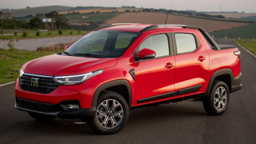

os melhores carros
- fiat argo: um sucesso absoluto no brasil desde 2017 tem vários tipos de modelos o fiat argo 1.0, fiat argo drive 1.0, fiat argo drive 1.3 S design, fiat argo trekking 1.3 e etc...

- fiat pulse: o fiat pulse além de ser um dos lançamentos mais importantes do último ano ele tem uma gama interessante tem varios tipos de fiat pulse

- fiat toro: é referência para gigantes como GM, HYUNDAI E VOLKSWAGEN

- fiat strada: lançada em 2020 essa é a mesma em 2022 lembrando que a espectativa de sua chegada foi grande por conta da pandemia atrasou bastante

- fiat 500e:conhecido como cinquecento existe desde 1955.